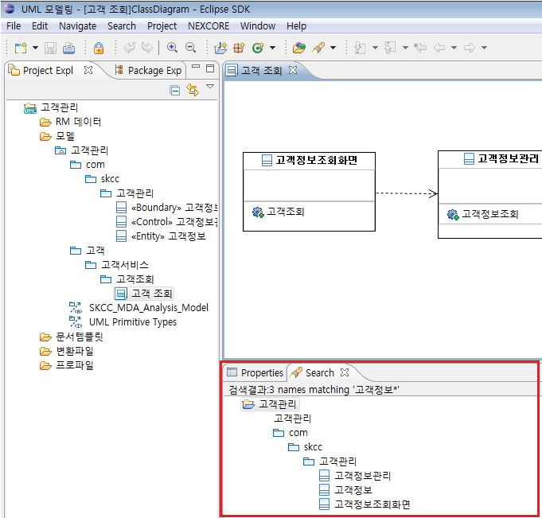

1. 검색
1.1 검색 창 열기
검색 창 실행은 파일 메뉴의 [Search] > [Search] 선택 또는 단축키 [Ctrl + H]로 실행할 수 있습니다.

<그림 1. 검색 창 열기>
검색을 실행하게 되면 아래와 같은 다이얼로그가 나타나게 되고 [UML Model Search] 탭을 선택하면 UML Element를 검색하실 수 있습니다.

<그림 2. UML Model Search 다이얼로그>
1.2 검색 실행

<그림 3. 검색 실행>
[UML Model Search]는 이클립스에서 제공하는 기본적인 [File Search]와 유사한
구조를 가지고 있습니다.
검색 문자열에 검색하고 싶은 UML Element 명을 입력하게 되고 검색 대상과 범주(Scope)를 설정할 수 있습니다.
현재 검색할 수 있는 대상은 액터, 유스케이스, 인터페이스, 컴포넌트, 클래스, 패키지가 있습니다.
1.3 검색 결과

<그림 4. 검색 결과 #1>
검색을 실행하게 되면 위의 그림과 같이 화면 하단에 검색 결과가 표시되게 됩니다.

<그림 5. 검색 결과 #2>
검색 대상과 매치되는 UML Element의 수와 프로젝트 탐색기에서의 위치를 결과로 보여주고 있습니다.